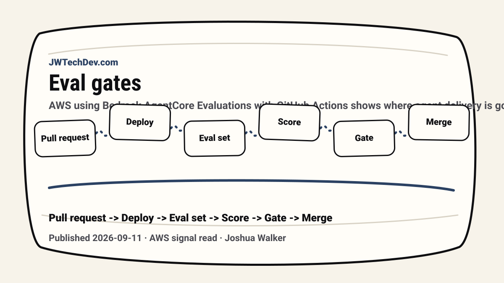

Your agent needs a CI quality gate before it needs more prompts
AWS using Bedrock AgentCore Evaluations with GitHub Actions shows where agent delivery is going: deploy, evaluate, score behavior, and block regressions before they hit users.

Quick answer
Agent quality should be tested in CI the same way teams test normal software changes. If a prompt, tool config, or model change makes the agent worse, the pull request should show that before production users do.
The useful signal
AWS published a GitHub Actions pattern that deploys an agent and OAuth-protected MCP server, runs evaluation prompts, scores behavior, and blocks pull requests when quality drops. That is a strong signal: agent quality is becoming a release-engineering problem.
This matters because agent regressions often look subtle. A system prompt changes. A tool schema changes. A model responds differently. The agent still talks, but it may choose the wrong tool, pass the wrong parameter, or miss the user goal.
Why manual testing is not enough
Manual checks are useful for exploration, but they do not scale as a release gate. If every agent change depends on one person remembering the right prompts to test, quality becomes folklore.
A CI gate turns expected behavior into a repeatable contract. Representative prompts, expected outcomes, tool-selection checks, and threshold scores become part of the pull request conversation.
What the pipeline should prove
A useful agent gate should prove more than “the code runs.” It should check whether the agent achieved the goal, selected the right tool, passed valid parameters, respected role boundaries, and produced an answer that still fits the product’s quality bar.
AWS’s pattern also shows the identity problem clearly: CI has to evaluate an agent that may normally operate through OAuth-protected MCP tools. That means test identity, scoped credentials, and machine-to-machine access need explicit design.
The JWT release-assurance model
For our mental model, every reusable agent capability should carry release metadata: owner, runtime, eval suite, approved tools, allowed write actions, approval gates, cost policy, and rollback path.
That metadata should live with the workbench, not in someone’s head. If the capability cannot be evaluated before promotion, it is not ready to become shared infrastructure.
What builders should do next
Start small. Pick five prompts that represent the job your agent is supposed to do. Add one bad-path prompt. Add one permission-sensitive prompt. Decide what “good enough” means before you run the test.
Then make the result visible in the same place you review code. The point is not to make AI perfect. The point is to catch obvious regressions before users become the test suite.
Sources checked
Want the starter kit?
Grab the free JWTechDev.com starter kit if you want a practical way to connect AWS, AI workflows, and approval gates.
Get resources